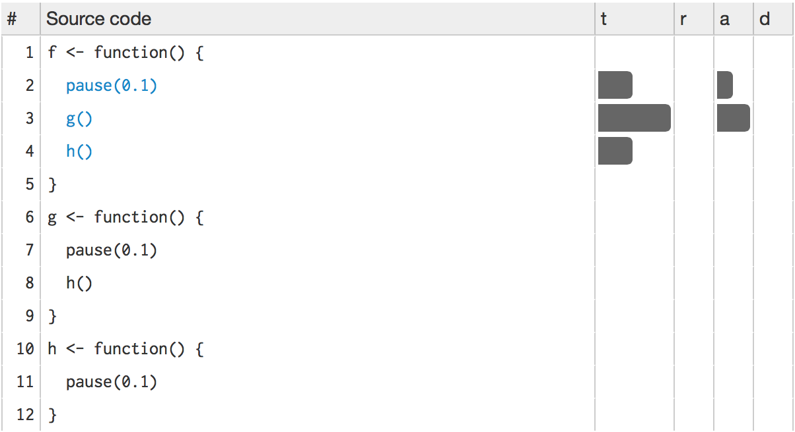
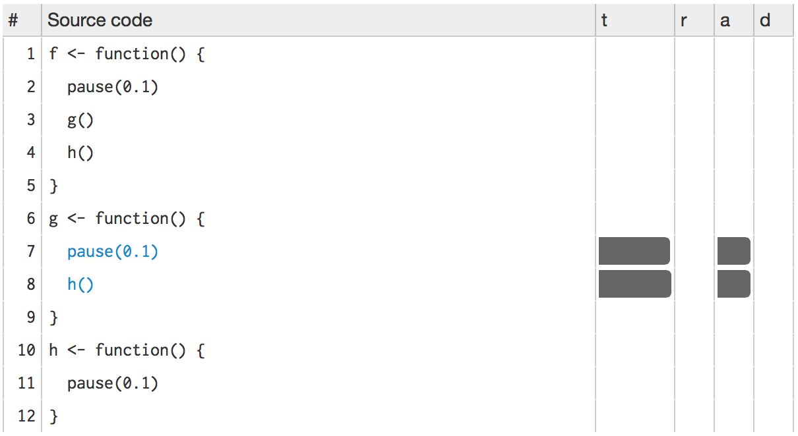

23 Optimising code
“Programmers waste enormous amounts of time thinking about, or worrying about, the speed of noncritical parts of their programs, and these attempts at efficiency actually have a strong negative impact when debugging and maintenance are considered.”
— Donald Knuth.
Optimising code to make it run faster is an iterative process:
- Find the biggest bottleneck (the slowest part of your code).
- Try to eliminate it (you may not succeed but that’s ok).
- Repeat until your code is “fast enough.”
This sounds easy, but it’s not.
Even experienced programmers have a hard time identifying bottlenecks in their code. Instead of relying on your intuition, you should profile your code: use realistic inputs and measure the run-time of each individual operation. Only once you’ve identified the most important bottlenecks can you attempt to eliminate them. It’s difficult to provide general advice on improving performance, but I try my best with six techniques that can be applied in many situations. I’ll also suggest a general strategy for performance optimisation that helps ensure that your faster code will still be correct code.
It’s easy to get caught up in trying to remove all bottlenecks. Don’t! Your time is valuable and is better spent analysing your data, not eliminating possible inefficiencies in your code. Be pragmatic: don’t spend hours of your time to save seconds of computer time. To enforce this advice, you should set a goal time for your code and optimise only up to that goal. This means you will not eliminate all bottlenecks. Some you will not get to because you’ve met your goal. Others you may need to pass over and accept either because there is no quick and easy solution or because the code is already well optimised and no significant improvement is possible. Accept these possibilities and move on to the next candidate.
23.0.0.0.1 Outline
Measuring performance describes how to find the bottlenecks in your code using line profiling.
Improving performance outlines seven general strategies for improving the performance of your code.
Code organisation teaches you how to organise your code to make optimisation as easy, and bug free, as possible.
Already solved reminds you to look for existing solutions.
Do as little as possible emphasises the importance of being lazy: often the easiest way to make a function faster is to let it to do less work.
Vectorise concisely defines vectorisation, and shows you how to make the most of built-in functions.
Avoid copies discusses the performance perils of copying data.
Byte code compilation shows you how to take advantage of R’s byte code compiler.
Case study: t-test pulls all the pieces together into a case study showing how to speed up repeated t-tests by ~1000x.
Parallelise teaches you how to use parallelisation to spread computation across all the cores in your computer.
Other techniques finishes the chapter with pointers to more resources that will help you write fast code.
23.0.0.0.2 Prerequisites
In this chapter we’ll be using the lineprof package to understand the performance of R code. Get it with:
devtools::install_github("hadley/lineprof")23.1 Measuring performance
To understand performance, you use a profiler. There are a number of different types of profilers. R uses a fairly simple type called a sampling or statistical profiler. A sampling profiler stops the execution of code every few milliseconds and records which function is currently executing (along with which function called that function, and so on). For example, consider f(), below:
library(lineprof)
f <- function() {
pause(0.1)
g()
h()
}
g <- function() {
pause(0.1)
h()
}
h <- function() {
pause(0.1)
}(I use lineprof::pause() instead of Sys.sleep() because Sys.sleep() does not appear in profiling outputs because as far as R can tell, it doesn’t use up any computing time.)
If we profiled the execution of f(), stopping the execution of code every 0.1 s, we’d see a profile like below. Each line represents one “tick” of the profiler (0.1 s in this case), and function calls are nested with >. It shows that the code spends 0.1 s running f(), then 0.2 s running g(), then 0.1 s running h().
f()
f() > g()
f() > g() > h()
f() > h()If we actually profile f(), using the code below, we’re unlikely to get such a clear result.
tmp <- tempfile()
Rprof(tmp, interval = 0.1)
f()
Rprof(NULL)That’s because profiling is hard to do accurately without slowing your code down by many orders of magnitude. The compromise that RProf() makes, sampling, only has minimal impact on the overall performance, but is fundamentally stochastic. There’s some variability in both the accuracy of the timer and in the time taken by each operation, so each time you profile you’ll get a slightly different answer. Fortunately, pinpoint accuracy is not needed to identify the slowest parts of your code.
Rather than focussing on individual calls, we’ll visualise aggregates using the lineprof package. There are a number of other options, like summaryRprof(), the proftools package, and the profr package, but these tools are beyond the scope of this book. I wrote the lineprof package as a simpler way to visualise profiling data. As the name suggests, the fundamental unit of analysis in lineprof() is a line of code. This makes lineprof less precise than the alternatives (because a line of code can contain multiple function calls), but it’s easier to understand the context.
To use lineprof, we first save the code in a file and source() it. Here profiling-example.R contains the definition of f(), g(), and h(). Note that you must use source() to load the code. This is because lineprof uses srcrefs to match up the code to the profile, and the needed srcrefs are only created when you load code from disk. We then use lineprof() to run our function and capture the timing output. Printing this object shows some basic information. For now, we’ll just focus on the time column which estimates how long each line took to run and the ref column which tells us which line of code was run. The estimates aren’t perfect, but the ratios look about right.
library(lineprof)
source("profiling-example.R")
l <- lineprof(f())
l
#> time alloc release dups ref src
#> 1 0.074 0.001 0 0 profiling.R#2 f/pause
#> 2 0.143 0.002 0 0 profiling.R#3 f/g
#> 3 0.071 0.000 0 0 profiling.R#4 f/h lineprof provides some functions to navigate through this data structure, but they’re a bit clumsy. Instead, we’ll start an interactive explorer using the shiny package. shine(l) will open a new web page (or if you’re using RStudio, a new pane) that shows your source code annotated with information about how long each line took to run. shine() starts a shiny app which “blocks” your R session. To exit, you’ll need to stop the process using escape or ctrl + c.

The t column visualises how much time is spent on each line. (You’ll learn about the other columns in memory profiling.) While not precise, it allows you to spot bottlenecks, and you can get precise numbers by hovering over each bar. This shows that twice as much time is spent on g() as on h(), so it would make sense to drill down into g() for more details. To do so, click g():

Then h():

This technique should allow you to quickly identify the major bottlenecks in your code.
23.1.1 Limitations
There are some other limitations to profiling:
Profiling does not extend to C code. You can see if your R code calls C/C++ code but not what functions are called inside of your C/C++ code. Unfortunately, tools for profiling compiled code are beyond the scope of this book (i.e., I have no idea how to do it).
Similarly, you can’t see what’s going on inside primitive functions or byte code compiled code.
If you’re doing a lot of functional programming with anonymous functions, it can be hard to figure out exactly which function is being called. The easiest way to work around this is to name your functions.
Lazy evaluation means that arguments are often evaluated inside another function. For example, in the following code, profiling would make it seem like
i()was called byj()because the argument isn’t evaluated until it’s needed byj().i <- function() { pause(0.1) 10 } j <- function(x) { x + 10 } j(i())If this is confusing, you can create temporary variables to force computation to happen earlier.
23.2 Improving performance
“We should forget about small efficiencies, say about 97% of the time: premature optimization is the root of all evil. Yet we should not pass up our opportunities in that critical 3%. A good programmer will not be lulled into complacency by such reasoning, he will be wise to look carefully at the critical code; but only after that code has been identified.”
— Donald Knuth.
Once you’ve used profiling to identify a bottleneck, you need to make it faster. The following sections introduce you to a number of techniques that I’ve found broadly useful:
- Look for existing solutions.
- Do less work.
- Vectorise.
- Parallelise.
- Avoid copies.
- Byte-code compile.
A final technique is to rewrite in a faster language, like C++. That’s a big topic and is covered in Rcpp.
Before we get into specific techniques, I’ll first describe a general strategy and organisational style that’s useful when working on performance.
23.3 Code organisation
There are two traps that are easy to fall into when trying to make your code faster:
- Writing faster but incorrect code.
- Writing code that you think is faster, but is actually no better.
The strategy outlined below will help you avoid these pitfalls.
When tackling a bottleneck, you’re likely to come up with multiple approaches. Write a function for each approach, encapsulating all relevant behaviour. This makes it easier to check that each approach returns the correct result and to time how long it takes to run. To demonstrate the strategy, I’ll compare two approaches for computing the mean:
mean1 <- function(x) mean(x)
mean2 <- function(x) sum(x) / length(x)I recommend that you keep a record of everything you try, even the failures. If a similar problem occurs in the future, it’ll be useful to see everything you’ve tried. To do this I often use R Markdown, which makes it easy to intermingle code with detailed comments and notes.
Next, generate a representative test case. The case should be big enough to capture the essence of your problem but small enough that it takes only a few seconds to run. You don’t want it to take too long because you’ll need to run the test case many times to compare approaches. On the other hand, you don’t want the case to be too small because then results might not scale up to the real problem.
Use this test case to quickly check that all variants return the same result. An easy way to do so is with stopifnot() and all.equal(). For real problems with fewer possible outputs, you may need more tests to make sure that an approach doesn’t accidentally return the correct answer. That’s unlikely for the mean.
x <- runif(100)
stopifnot(all.equal(mean1(x), mean2(x)))Finally, use the microbenchmark package to compare how long each variation takes to run. For bigger problems, reduce the times parameter so that it only takes a couple of seconds to run. Focus on the median time, and use the upper and lower quartiles to gauge the variability of the measurement.
microbenchmark(
mean1(x),
mean2(x)
)
#> Unit: nanoseconds
#> expr min lq mean median uq max neval cld
#> mean1(x) 2,180 2,240 11112 2,330 2,460 872,000 100 a
#> mean2(x) 486 517 26157 553 609 2,550,000 100 a(You might be surprised by the results: mean(x) is considerably slower than sum(x) / length(x). This is because, among other reasons, mean(x) makes two passes over the vector to be more numerically accurate.)
Before you start experimenting, you should have a target speed that defines when the bottleneck is no longer a problem. Setting such a goal is important because you don’t want to spend valuable time over-optimising your code.
If you’d like to see this strategy in action, I’ve used it a few times on stackoverflow:
23.4 Has someone already solved the problem?
Once you’ve organised your code and captured all the variations you can think of, it’s natural to see what others have done. You are part of a large community, and it’s quite possible that someone has already tackled the same problem. If your bottleneck is a function in a package, it’s worth looking at other packages that do the same thing. Two good places to start are:
CRAN task views. If there’s a CRAN task view related to your problem domain, it’s worth looking at the packages listed there.
Reverse dependencies of Rcpp, as listed on its CRAN page. Since these packages use C++, it’s possible to find a solution to your bottleneck written in a higher performance language.
Otherwise, the challenge is describing your bottleneck in a way that helps you find related problems and solutions. Knowing the name of the problem or its synonyms will make this search much easier. But because you don’t know what it’s called, it’s hard to search for it! By reading broadly about statistics and algorithms, you can build up your own knowledge base over time. Alternatively, ask others. Talk to your colleagues and brainstorm some possible names, then search on Google and stackoverflow. It’s often helpful to restrict your search to R related pages. For Google, try rseek. For stackoverflow, restrict your search by including the R tag, [R], in your search.
As discussed above, record all solutions that you find, not just those that immediately appear to be faster. Some solutions might be initially slower, but because they are easier to optimise they end up being faster. You may also be able to combine the fastest parts from different approaches. If you’ve found a solution that’s fast enough, congratulations! If appropriate, you may want to share your solution with the R community. Otherwise, read on.
23.4.1 Exercises
What are faster alternatives to
lm? Which are specifically designed to work with larger datasets?What package implements a version of
match()that’s faster for repeated lookups? How much faster is it?List four functions (not just those in base R) that convert a string into a date time object. What are their strengths and weaknesses?
How many different ways can you compute a 1d density estimate in R?
Which packages provide the ability to compute a rolling mean?
What are the alternatives to
optim()?
23.5 Do as little as possible
The easiest way to make a function faster is to let it do less work. One way to do that is use a function tailored to a more specific type of input or output, or a more specific problem. For example:
rowSums(),colSums(),rowMeans(), andcolMeans()are faster than equivalent invocations that useapply()because they are vectorised (the topic of the next section).vapply()is faster thansapply()because it pre-specifies the output type.If you want to see if a vector contains a single value,
any(x == 10)is much faster than10 %in% x. This is because testing equality is simpler than testing inclusion in a set.
Having this knowledge at your fingertips requires knowing that alternative functions exist: you need to have a good vocabulary. Start with the basics, and expand your vocab by regularly reading R code. Good places to read code are the R-help mailing list and stackoverflow.
Some functions coerce their inputs into a specific type. If your input is not the right type, the function has to do extra work. Instead, look for a function that works with your data as it is, or consider changing the way you store your data. The most common example of this problem is using apply() on a data frame. apply() always turns its input into a matrix. Not only is this error prone (because a data frame is more general than a matrix), it is also slower.
Other functions will do less work if you give them more information about the problem. It’s always worthwhile to carefully read the documentation and experiment with different arguments. Some examples that I’ve discovered in the past include:
read.csv(): specify known column types withcolClasses.factor(): specify known levels withlevels.cut(): don’t generate labels withlabels = FALSEif you don’t need them, or, even better, usefindInterval()as mentioned in the “see also” section of the documentation.unlist(x, use.names = FALSE)is much faster thanunlist(x).interaction(): if you only need combinations that exist in the data, usedrop = TRUE.
Sometimes you can make a function faster by avoiding method dispatch. As we saw in (Extreme dynamism), method dispatch in R can be costly. If you’re calling a method in a tight loop, you can avoid some of the costs by doing the method lookup only once:
For S3, you can do this by calling
generic.class()instead ofgeneric().For S4, you can do this by using
getMethod()to find the method, saving it to a variable, and then calling that function.
For example, calling mean.default() quite a bit faster than calling mean() for small vectors:
x <- runif(1e2)
microbenchmark(
mean(x),
mean.default(x)
)
#> Unit: nanoseconds
#> expr min lq mean median uq max neval cld
#> mean(x) 1,750 1,800 2107 1,870 1,940 21,500 100 b
#> mean.default(x) 799 836 946 872 942 3,240 100 aThis optimisation is a little risky. While mean.default() is almost twice as fast, it’ll fail in surprising ways if x is not a numeric vector. You should only use it if you know for sure what x is.
Knowing that you’re dealing with a specific type of input can be another way to write faster code. For example, as.data.frame() is quite slow because it coerces each element into a data frame and then rbind()s them together. If you have a named list with vectors of equal length, you can directly transform it into a data frame. In this case, if you’re able to make strong assumptions about your input, you can write a method that’s about 20x faster than the default.
quickdf <- function(l) {
class(l) <- "data.frame"
attr(l, "row.names") <- .set_row_names(length(l[[1]]))
l
}
l <- lapply(1:26, function(i) runif(1e3))
names(l) <- letters
microbenchmark(
quick_df = quickdf(l),
as.data.frame = as.data.frame(l)
)
#> Unit: microseconds
#> expr min lq mean median uq max neval cld
#> quick_df 5.08 7.07 38.3 11.3 12.3 2,800 100 a
#> as.data.frame 907.00 955.00 1030.4 972.0 1,000.0 4,280 100 bAgain, note the trade-off. This method is fast because it’s dangerous. If you give it bad inputs, you’ll get a corrupt data frame:
quickdf(list(x = 1, y = 1:2))
#> Warning in format.data.frame(x, digits = digits, na.encode = FALSE):
#> corrupt data frame: columns will be truncated or padded with NAs
#> x y
#> 1 1 1To come up with this minimal method, I carefully read through and then rewrote the source code for as.data.frame.list() and data.frame(). I made many small changes, each time checking that I hadn’t broken existing behaviour. After several hours work, I was able to isolate the minimal code shown above. This is a very useful technique. Most base R functions are written for flexibility and functionality, not performance. Thus, rewriting for your specific need can often yield substantial improvements. To do this, you’ll need to read the source code. It can be complex and confusing, but don’t give up!
The following example shows a progressive simplification of the diff() function if you only want computing differences between adjacent values. At each step, I replace one argument with a specific case, and then check to see that the function still works. The initial function is long and complicated, but by restricting the arguments I not only make it around twice as fast, I also make it easier to understand.
First, I take the code of diff() and reformat it to my style:
diff1 <- function (x, lag = 1L, differences = 1L) {
ismat <- is.matrix(x)
xlen <- if (ismat) dim(x)[1L] else length(x)
if (length(lag) > 1L || length(differences) > 1L ||
lag < 1L || differences < 1L)
stop("'lag' and 'differences' must be integers >= 1")
if (lag * differences >= xlen) {
return(x[0L])
}
r <- unclass(x)
i1 <- -seq_len(lag)
if (ismat) {
for (i in seq_len(differences)) {
r <- r[i1, , drop = FALSE] -
r[-nrow(r):-(nrow(r) - lag + 1L), , drop = FALSE]
}
} else {
for (i in seq_len(differences)) {
r <- r[i1] - r[-length(r):-(length(r) - lag + 1L)]
}
}
class(r) <- oldClass(x)
r
}Next, I assume vector input. This allows me to remove the is.matrix() test and the method that uses matrix subsetting.
diff2 <- function (x, lag = 1L, differences = 1L) {
xlen <- length(x)
if (length(lag) > 1L || length(differences) > 1L ||
lag < 1L || differences < 1L)
stop("'lag' and 'differences' must be integers >= 1")
if (lag * differences >= xlen) {
return(x[0L])
}
i1 <- -seq_len(lag)
for (i in seq_len(differences)) {
x <- x[i1] - x[-length(x):-(length(x) - lag + 1L)]
}
x
}
diff2(cumsum(0:10))
#> [1] 1 2 3 4 5 6 7 8 9 10I now assume that difference = 1L. This simplifies input checking and eliminates the for loop:
diff3 <- function (x, lag = 1L) {
xlen <- length(x)
if (length(lag) > 1L || lag < 1L)
stop("'lag' must be integer >= 1")
if (lag >= xlen) {
return(x[0L])
}
i1 <- -seq_len(lag)
x[i1] - x[-length(x):-(length(x) - lag + 1L)]
}
diff3(cumsum(0:10))
#> [1] 1 2 3 4 5 6 7 8 9 10Finally I assume lag = 1L. This eliminates input checking and simplifies subsetting.
diff4 <- function (x) {
xlen <- length(x)
if (xlen <= 1) return(x[0L])
x[-1] - x[-xlen]
}
diff4(cumsum(0:10))
#> [1] 1 2 3 4 5 6 7 8 9 10Now diff4() is both considerably simpler and considerably faster than diff1():
x <- runif(100)
microbenchmark(
diff1(x),
diff2(x),
diff3(x),
diff4(x)
)
#> Unit: microseconds
#> expr min lq mean median uq max neval cld
#> diff1(x) 2.95 4.98 159.85 5.44 5.97 15,400.0 100 a
#> diff2(x) 2.69 4.44 5.24 4.79 5.14 30.2 100 a
#> diff3(x) 2.12 4.15 66.98 4.42 4.68 6,250.0 100 a
#> diff4(x) 1.60 3.46 32.50 3.60 4.07 2,870.0 100 aYou’ll be able to make diff() even faster for this special case once you’ve read Rcpp.
A final example of doing less work is to use simpler data structures. For example, when working with rows from a data frame, it’s often faster to work with row indices than data frames. For instance, if you wanted to compute a bootstrap estimate of the correlation between two columns in a data frame, there are two basic approaches: you can either work with the whole data frame or with the individual vectors. The following example shows that working with vectors is about twice as fast.
sample_rows <- function(df, i) sample.int(nrow(df), i,
replace = TRUE)
# Generate a new data frame containing randomly selected rows
boot_cor1 <- function(df, i) {
sub <- df[sample_rows(df, i), , drop = FALSE]
cor(sub$x, sub$y)
}
# Generate new vectors from random rows
boot_cor2 <- function(df, i ) {
idx <- sample_rows(df, i)
cor(df$x[idx], df$y[idx])
}
df <- data.frame(x = runif(100), y = runif(100))
microbenchmark(
boot_cor1(df, 10),
boot_cor2(df, 10)
)
#> Unit: microseconds
#> expr min lq mean median uq max neval cld
#> boot_cor1(df, 10) 86.4 89.1 128.6 91.0 94.9 2,260 100 a
#> boot_cor2(df, 10) 56.0 59.2 87.6 60.3 61.7 2,350 100 a23.5.1 Exercises
How do the results change if you compare
mean()andmean.default()on 10,000 observations, rather than on 100?The following code provides an alternative implementation of
rowSums(). Why is it faster for this input?rowSums2 <- function(df) { out <- df[[1L]] if (ncol(df) == 1) return(out) for (i in 2:ncol(df)) { out <- out + df[[i]] } out } df <- as.data.frame( replicate(1e3, sample(100, 1e4, replace = TRUE)) ) system.time(rowSums(df)) #> user system elapsed #> 0.049 0.002 0.052 system.time(rowSums2(df)) #> user system elapsed #> 0.036 0.004 0.039What’s the difference between
rowSums()and.rowSums()?Make a faster version of
chisq.test()that only computes the chi-square test statistic when the input is two numeric vectors with no missing values. You can try simplifyingchisq.test()or by coding from the mathematical definition.Can you make a faster version of
table()for the case of an input of two integer vectors with no missing values? Can you use it to speed up your chi-square test?Imagine you want to compute the bootstrap distribution of a sample correlation using
cor_df()and the data in the example below. Given that you want to run this many times, how can you make this code faster? (Hint: the function has three components that you can speed up.)n <- 1e6 df <- data.frame(a = rnorm(n), b = rnorm(n)) cor_df <- function(df, n) { i <- sample(seq(n), n, replace = TRUE) cor(df[i, , drop = FALSE])[2,1] }Is there a way to vectorise this procedure?
23.6 Vectorise
If you’ve used R for any length of time, you’ve probably heard the admonishment to “vectorise your code”. But what does that actually mean? Vectorising your code is not just about avoiding for loops, although that’s often a step. Vectorising is about taking a “whole object” approach to a problem, thinking about vectors, not scalars. There are two key attributes of a vectorised function:
It makes many problems simpler. Instead of having to think about the components of a vector, you only think about entire vectors.
The loops in a vectorised function are written in C instead of R. Loops in C are much faster because they have much less overhead.
Functionals stressed the importance of vectorised code as a higher level abstraction. Vectorisation is also important for writing fast R code. This doesn’t mean simply using apply() or lapply(), or even Vectorise(). Those functions improve the interface of a function, but don’t fundamentally change performance. Using vectorisation for performance means finding the existing R function that is implemented in C and most closely applies to your problem.
Vectorised functions that apply to many common performance bottlenecks include:
rowSums(),colSums(),rowMeans(), andcolMeans(). These vectorised matrix functions will always be faster than usingapply(). You can sometimes use these functions to build other vectorised functions.rowAny <- function(x) rowSums(x) > 0 rowAll <- function(x) rowSums(x) == ncol(x)Vectorised subsetting can lead to big improvements in speed. Remember the techniques behind lookup tables (lookup tables) and matching and merging by hand (matching and merging by hand). Also remember that you can use subsetting assignment to replace multiple values in a single step. If
xis a vector, matrix or data frame thenx[is.na(x)] <- 0will replace all missing values with 0.If you’re extracting or replacing values in scattered locations in a matrix or data frame, subset with an integer matrix. See matrix subsetting for more details.
If you’re converting continuous values to categorical make sure you know how to use
cut()andfindInterval().Be aware of vectorised functions like
cumsum()anddiff().
Matrix algebra is a general example of vectorisation. There loops are executed by highly tuned external libraries like BLAS. If you can figure out a way to use matrix algebra to solve your problem, you’ll often get a very fast solution. The ability to solve problems with matrix algebra is a product of experience. While this skill is something you’ll develop over time, a good place to start is to ask people with experience in your domain.
The downside of vectorisation is that it makes it harder to predict how operations will scale. The following example measures how long it takes to use character subsetting to lookup 1, 10, and 100 elements from a list. You might expect that looking up 10 elements would take 10x as long as looking up 1, and that looking up 100 elements would take 10x longer again. In fact, the following example shows that it only takes about 9 times longer to look up 100 elements than it does to look up 1.
lookup <- setNames(as.list(sample(100, 26)), letters)
x1 <- "j"
x10 <- sample(letters, 10)
x100 <- sample(letters, 100, replace = TRUE)
microbenchmark(
lookup[x1],
lookup[x10],
lookup[x100]
)
#> Unit: nanoseconds
#> expr min lq mean median uq max neval cld
#> lookup[x1] 371 385 532 400 496 7,350 100 a
#> lookup[x10] 1,150 1,180 1259 1,200 1,260 2,760 100 b
#> lookup[x100] 3,360 3,460 3756 3,590 3,790 12,300 100 cVectorisation won’t solve every problem, and rather than torturing an existing algorithm into one that uses a vectorised approach, you’re often better off writing your own vectorised function in C++. You’ll learn how to do so in Rcpp.
23.6.1 Exercises
The density functions, e.g.,
dnorm(), have a common interface. Which arguments are vectorised over? What doesrnorm(10, mean = 10:1)do?Compare the speed of
apply(x, 1, sum)withrowSums(x)for varying sizes ofx.How can you use
crossprod()to compute a weighted sum? How much faster is it than the naivesum(x * w)?
23.7 Avoid copies
A pernicious source of slow R code is growing an object with a loop. Whenever you use c(), append(), cbind(), rbind(), or paste() to create a bigger object, R must first allocate space for the new object and then copy the old object to its new home. If you’re repeating this many times, like in a for loop, this can be quite expensive. You’ve entered Circle 2 of the “R inferno”.
Here’s a little example that shows the problem. We first generate some random strings, and then combine them either iteratively with a loop using collapse(), or in a single pass using paste(). Note that the performance of collapse() gets relatively worse as the number of strings grows: combining 100 strings takes almost 30 times longer than combining 10 strings.
random_string <- function() {
paste(sample(letters, 50, replace = TRUE), collapse = "")
}
strings10 <- replicate(10, random_string())
strings100 <- replicate(100, random_string())
collapse <- function(xs) {
out <- ""
for (x in xs) {
out <- paste0(out, x)
}
out
}
microbenchmark(
loop10 = collapse(strings10),
loop100 = collapse(strings100),
vec10 = paste(strings10, collapse = ""),
vec100 = paste(strings100, collapse = "")
)
#> Unit: microseconds
#> expr min lq mean median uq max neval cld
#> loop10 13.80 14.80 41.43 15.30 16.20 2,480.0 100 a
#> loop100 463.00 466.00 496.51 469.00 512.00 695.0 100 b
#> vec10 3.22 3.56 4.08 3.77 4.03 20.5 100 a
#> vec100 25.30 25.90 28.88 26.30 28.60 74.0 100 aModifying an object in a loop, e.g., x[i] <- y, can also create a copy, depending on the class of x. Modification in place discusses this issue in more depth and gives you some tools to determine when you’re making copies.
23.8 Byte code compilation
R 2.13.0 introduced a byte code compiler which can increase the speed of some code. Using the compiler is an easy way to get improvements in speed. Even if it doesn’t work well for your function, you won’t have invested a lot of time in the effort. The following example shows the pure R version of lapply() from functionals. Compiling it gives a considerable speedup, although it’s still not quite as fast as the C version provided by base R.
lapply2 <- function(x, f, ...) {
out <- vector("list", length(x))
for (i in seq_along(x)) {
out[[i]] <- f(x[[i]], ...)
}
out
}
lapply2_c <- compiler::cmpfun(lapply2)
x <- list(1:10, letters, c(F, T), NULL)
microbenchmark(
lapply2(x, is.null),
lapply2_c(x, is.null),
lapply(x, is.null)
)
#> Unit: microseconds
#> expr min lq mean median uq max neval cld
#> lapply2(x, is.null) 1.41 1.44 35.66 1.46 1.56 3,420.0 100 a
#> lapply2_c(x, is.null) 1.41 1.43 1.63 1.46 1.54 10.3 100 a
#> lapply(x, is.null) 1.68 1.76 2.08 1.82 1.90 18.4 100 aByte code compilation really helps here, but in most cases you’re more likely to get a 5-10% improvement. All base R functions are byte code compiled by default.
23.9 Case study: t-test
The following case study shows how to make t-tests faster using some of the techniques described above. It’s based on an example in “Computing thousands of test statistics simultaneously in R” by Holger Schwender and Tina Müller. I thoroughly recommend reading the paper in full to see the same idea applied to other tests.
Imagine we have run 1000 experiments (rows), each of which collects data on 50 individuals (columns). The first 25 individuals in each experiment are assigned to group 1 and the rest to group 2. We’ll first generate some random data to represent this problem:
m <- 1000
n <- 50
X <- matrix(rnorm(m * n, mean = 10, sd = 3), nrow = m)
grp <- rep(1:2, each = n / 2)For data in this form, there are two ways to use t.test(). We can either use the formula interface or provide two vectors, one for each group. Timing reveals that the formula interface is considerably slower.
system.time(for(i in 1:m) t.test(X[i, ] ~ grp)$statistic)
#> user system elapsed
#> 0.612 0.004 0.619
system.time(
for(i in 1:m) t.test(X[i, grp == 1], X[i, grp == 2])$statistic
)
#> user system elapsed
#> 0.190 0.003 0.198Of course, a for loop computes, but doesn’t save the values. We’ll use apply() to do that. This adds a little overhead:
compT <- function(x, grp){
t.test(x[grp == 1], x[grp == 2])$statistic
}
system.time(t1 <- apply(X, 1, compT, grp = grp))
#> user system elapsed
#> 0.177 0.002 0.180How can we make this faster? First, we could try doing less work. If you look at the source code of stats:::t.test.default(), you’ll see that it does a lot more than just compute the t-statistic. It also computes the p-value and formats the output for printing. We can try to make our code faster by stripping out those pieces.
my_t <- function(x, grp) {
t_stat <- function(x) {
m <- mean(x)
n <- length(x)
var <- sum((x - m) ^ 2) / (n - 1)
list(m = m, n = n, var = var)
}
g1 <- t_stat(x[grp == 1])
g2 <- t_stat(x[grp == 2])
se_total <- sqrt(g1$var / g1$n + g2$var / g2$n)
(g1$m - g2$m) / se_total
}
system.time(t2 <- apply(X, 1, my_t, grp = grp))
#> user system elapsed
#> 0.021 0.000 0.022
stopifnot(all.equal(t1, t2))This gives us about a 6x speed improvement.
Now that we have a fairly simple function, we can make it faster still by vectorising it. Instead of looping over the array outside the function, we will modify t_stat() to work with a matrix of values. Thus, mean() becomes rowMeans(), length() becomes ncol(), and sum() becomes rowSums(). The rest of the code stays the same.
rowtstat <- function(X, grp){
t_stat <- function(X) {
m <- rowMeans(X)
n <- ncol(X)
var <- rowSums((X - m) ^ 2) / (n - 1)
list(m = m, n = n, var = var)
}
g1 <- t_stat(X[, grp == 1])
g2 <- t_stat(X[, grp == 2])
se_total <- sqrt(g1$var / g1$n + g2$var / g2$n)
(g1$m - g2$m) / se_total
}
system.time(t3 <- rowtstat(X, grp))
#> user system elapsed
#> 0.012 0.000 0.013
stopifnot(all.equal(t1, t3))That’s much faster! It’s at least 40x faster than our previous effort, and around 1000x faster than where we started.
Finally, we could try byte code compilation. Here we’ll need to use microbenchmark() instead of system.time() in order to get enough accuracy to see a difference:
rowtstat_bc <- compiler::cmpfun(rowtstat)
microbenchmark(
rowtstat(X, grp),
rowtstat_bc(X, grp),
unit = "ms"
)
#> Unit: milliseconds
#> expr min lq mean median uq max neval cld
#> rowtstat(X, grp) 0.633 0.664 0.718 0.686 0.733 1.26 100 a
#> rowtstat_bc(X, grp) 0.344 0.657 0.894 0.677 0.728 20.50 100 aIn this example, byte code compilation doesn’t help at all.
23.10 Parallelise
Parallelisation uses multiple cores to work simultaneously on different parts of a problem. It doesn’t reduce the computing time, but it saves your time because you’re using more of your computer’s resources. Parallel computing is a complex topic, and there’s no way to cover it in depth here. Some resources I recommend are:
Parallel R by Q. Ethan McCallum and Stephen Weston.
Parallel Computing for Data Science by Norm Matloff.
What I want to show is a simple application of parallel computing to what are called “embarrassingly parallel problems”. An embarrassingly parallel problem is one that’s made up of many simple problems that can be solved independently. A great example of this is lapply() because it operates on each element independently of the others. It’s very easy to parallelise lapply() on Linux and the Mac because you simply substitute mclapply() for lapply(). The following code snippet runs a trivial (but slow) function on all cores of your computer.
library(parallel)cores <- detectCores()
cores
#> [1] 8
pause <- function(i) {
function(x) Sys.sleep(i)
}
system.time(lapply(1:10, pause(0.25)))
#> user system elapsed
#> 0.00 0.00 2.53
system.time(mclapply(1:10, pause(0.25), mc.cores = cores))
#> user system elapsed
#> 0.011 0.018 0.509Life is a bit harder in Windows. You need to first set up a local cluster and then use parLapply():
cluster <- makePSOCKcluster(cores)
system.time(parLapply(cluster, 1:10, function(i) Sys.sleep(i)))
#> user system elapsed
#> 0.003 0.000 19.025The main difference between mclapply() and makePSOCKcluster() is that the individual processes generated by mclapply() inherit from the current process, while those generated by makePSOCKcluster() start with a fresh session. This means that most real code will need some setup. Use clusterEvalQ() to run arbitrary code on each cluster and load needed packages, and clusterExport() to copy objects in the current session to the remote sessions.
x <- 10
psock <- parallel::makePSOCKcluster(1L)
clusterEvalQ(psock, x)
#> Error: one node produced an error: object 'x' not found
clusterExport(psock, "x")
clusterEvalQ(psock, x)
#> [[1]]
#> [1] 10There is some communication overhead with parallel computing. If the subproblems are very small, then parallelisation might hurt rather than help. It’s also possible to distribute computation over a network of computers (not just the cores on your local computer) but that’s beyond the scope of this book, because it gets increasingly complicated to balance computation and communication costs. A good place to start for more information is the high performance computing CRAN task view.
23.11 Other techniques
Being able to write fast R code is part of being a good R programmer. Beyond the specific hints in this chapter, if you want to write fast R code, you’ll need to improve your general programming skills. Some ways to do this are to:
Read R blogs to see what performance problems other people have struggled with, and how they have made their code faster.
Read other R programming books, like Norm Matloff’s The Art of R Programming or Patrick Burns’ R Inferno to learn about common traps.
Take an algorithms and data structure course to learn some well known ways of tackling certain classes of problems. I have heard good things about Princeton’s Algorithms course offered on Coursera.
Read general books about optimisation like Mature optimisation by Carlos Bueno, or the Pragmatic Programmer by Andrew Hunt and David Thomas.
You can also reach out to the community for help. Stackoverflow can be a useful resource. You’ll need to put some effort into creating an easily digestible example that also captures the salient features of your problem. If your example is too complex, few people will have the time and motivation to attempt a solution. If it’s too simple, you’ll get answers that solve the toy problem but not the real problem. If you also try to answer questions on stackoverflow, you’ll quickly get a feel for what makes a good question.